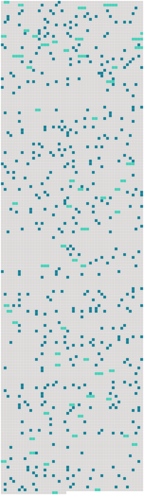

Longueur nb maillons : 531 mentions |
|
« [Ernest-Jean Sarrasine] était le seul fils d’ un procureur de la Franche-Comté, repris -je après une pause. [Son] père avait assez loyalement gagné six à huit mille livres de rente, fortune de praticien qui, jadis, en province, passait pour colossale. Le vieux maître Sarrasine, n’ ayant qu’ [un enfant] , ne voulut rien négliger pour [son] éducation, il espérait [en] faire un magistrat, et vivre assez long-temps pour voir, dans ses vieux jours, [le petit-fils de Matthieu Sarrasine] , laboureur au pays de Saint-Dié, s’ asseoir sur les lis et dormir à l’ audience pour la plus grande gloire du Parlement ; mais le ciel ne réservait pas cette joie au procureur. [Le jeune Sarrasine] , confié de bonne heure aux Jésuites, donna les preuves d’ une turbulence peu commune. [Il] eut l’ enfance d’ un homme de talent. [Il] ne voulait étudier qu’ à [sa] guise, se [révoltait] souvent, et [restait] parfois des heures entières plongé dans de confuses méditations, occupé, tantôt à contempler [ses] camarades quand ils jouaient, tantôt à se représenter les héros d’ Homère. Puis, s’ il [lui] arrivait de se divertir, il mettait une ardeur extraordinaire dans [ses] jeux. Lorsqu’ une lutte s’ élevait entre un camarade et [lui] , rarement le combat finissait sans qu’ il y eût du sang répandu. S’ [il] était le plus faible, [il] mordait. [1 phrases] ] passif, sans aptitude ou trop intelligent, [son] caractère bizarre [le] fit redouter de [ses] maîtres autant que de [ses] camarades. Au lieu d’ apprendre les éléments de la langue grecque, [il] dessinait le révérend père qui leur expliquait un passage de Thucydide, [croquait] le maître de mathématiques, le préfet, les valets, le correcteur, et [barbouillait] tous les murs d’ esquisses informes. Au lieu de chanter les louanges du Seigneur à l’ église, [il] s’ amusait, pendant les offices, à déchiqueter un banc ; ou quand [il] avait volé quelque morceau de bois, [il] sculptait quelque figure de sainte. Si le bois, la pierre ou le crayon [lui] manquaient, [il] rendait [ses] idées avec de la mie de pain. Soit qu’ [il] copiât les personnages des tableaux qui garnissaient le chœur, soit qu’ [il] improvisât, [il] laissait toujours à [sa] place de grossières ébauches, dont le caractère licencieux désespérait les plus jeunes pères ; et les médisants prétendaient que les vieux jésuites en souriaient. Enfin, s’ il faut en croire la chronique du collége, [il] fut chassé, pour avoir, en attendant [son] tour au confessionnal, un vendredi saint, sculpté une grosse bûche en forme de Christ. L’ impiété gravée sur cette statue était trop forte pour ne pas attirer un châtiment à [l’ artiste] N’ avait [-il] pas eu l’ audace de placer sur le haut du tabernacle cette figure passablement cynique!! [Sarrasine] vint chercher à Paris un refuge contre les menaces de la malédiction paternelle. Ayant une de ces volontés fortes qui ne connaissent pas d’ obstacles, [il] obéit aux ordres de [son] génie et [entra] dans l’ atelier de Bouchardon. [Il] travaillait pendant toute la journée, et, le soir, allait mendier [sa] subsistance. Bouchardon, émerveillé des progrès et de l’ intelligence [du jeune artiste] , devina bientôt la misère dans laquelle se trouvait [son élève] ; il [le] secourut, [le] prit en affection, et [le] traita comme son enfant. Puis, lorsque le génie de [Sarrasine] se fut dévoilé par une de ces œuvres où le talent à venir lutte contre l’ effervescence de la jeunesse, le généreux Bouchardon essaya de [le] remettre dans les bonnes grâces du vieux procureur. Devant l’ autorité [du sculpteur célèbre] le courroux paternel s’ apaisa. Besançon tout entier se félicita d’ avoir donné le jour à [un grand homme futur] Dans le premier moment d’ extase où le plongea sa vanité flattée, le praticien avare mit [son fils] en état de paraître avec avantage dans le monde. Les longues et laborieuses études exigées par la sculpture domptèrent pendant long-temps le caractère impétueux et le génie sauvage de [Sarrasine] Bouchardon, prévoyant la violence avec laquelle les passions se déchaîneraient dans [cette jeune âme] , peut-être aussi vigoureusement trempée que celle de Michel-Ange, [en] étouffa l’ énergie sous des travaux continus. Il réussit à maintenir dans de justes bornes la fougue extraordinaire de [Sarrasine] , en [lui] défendant de travailler, en [lui] proposant des distractions quand il [le] voyait emporté par la furie de quelque pensée, ou en [lui] confiant d’ importants travaux au moment où [il] était prêt à se livrer à la dissipation.
Mais, auprès de [cette âme passionnée] , la douceur fut toujours la plus puissante de toutes les armes, et le maître ne prit un grand empire sur [son élève] qu’ en [en] excitant la reconnaissance par une bonté paternelle. « À l’ âge de vingt-deux ans, [Sarrasine] fut forcément soustrait à la salutaire influence que Bouchardon exerçait sur ses mœurs et sur ses habitudes. [Il] porta les peines de [son] génie en gagnant le prix de sculpture fondé par le marquis de Marigny, le frère de madame de Pompadour, qui fit tant pour les Arts. Diderot vanta comme un chef-d’œuvre la statue de [l’ élève de Bouchardon] Ce ne fut pas sans une profonde douleur que le sculpteur du roi vit partir pour l’ Italie [un jeune homme] [dont] , par principe, [il] avait entretenu l’ ignorance profonde sur les choses de la vie. [Sarrasine] était depuis six ans le commensal de Bouchardon. Fanatique de son art comme Canova le fut depuis, [il] se levait au jour, [entrait] dans l’ atelier pour n’ en sortir qu’ à la nuit, et ne [vivait] qu’ avec [sa] muse. S’ [il] allait à la Comédie-Française, il y était entraîné par [son] maître. [Il] se sentait si gêné chez madame Geoffrin et dans le grand monde où Bouchardon essaya de [l’] introduire, qu’ [il] préféra rester seul, et [répudia] les plaisirs de cette époque licencieuse. [Il] n’ eut pas d’ autre maîtresse que la Sculpture et Clotilde, l’ une des célébrités de l’ Opéra. [1 phrases] [Sarrasine] était assez laid, toujours mal mis, et de [sa] nature si libre, si peu régulier dans [sa] vie privée, que l’ illustre nymphe, redoutant quelque catastrophe, rendit bientôt [le sculpteur] à l’ amour des Arts. [1 phrases] Elle s’ étonna, je crois, que [sa camarade] eût pu [l’] emporter sur des statues. [Sarrasine] partit pour l’ Italie en 1758. Pendant le voyage, [son] imagination ardente s’ enflamma sous un ciel de cuivre et à l’ aspect des monuments merveilleux dont est semée la patrie des Arts. [Il] admira les statues, les fresques, les tableaux ; et, plein d’ émulation, [il] vint à Rome, en proie au désir d’ inscrire [son] nom entre les noms de Michel-Ange et de monsieur Bouchardon. Aussi, pendant les premiers jours, partagea-t [-il] [son] temps entre [ses] travaux d’ atelier et l’ examen des œuvres d’ art qui abondent à Rome. [Il] avait déjà passé quinze jours dans l’ état d’ extase qui saisit toutes les jeunes imaginations à l’ aspect de la reine des ruines, quand, un soir, [il] entra au théâtre d’ Argentina, devant lequel se pressait une grande foule.
[Il] s’ enquit des causes de cette affluence, et le monde répondit par deux noms : [1 phrases] « [Il] entre et s’ [assied] au parterre, pressé par deux abbati notablement gros ; mais [il] était assez heureusement placé près de la scène. [1 phrases] Pour la première fois de [sa] vie [il] entendit cette musique dont monsieur Jean-Jacques Rousseau [lui] avait si éloquemment vanté les délices, pendant une soirée du baron d’ Holbach. Les sens [du jeune sculpteur] furent, pour ainsi dire, lubrifiés par les accents de la sublime harmonie de Jomelli. Les langoureuses originalités de ces voix italiennes habilement mariées [le] plongèrent dans une ravissante extase. [Il] resta muet, immobile, ne se sentant pas même foulé par deux prêtres. [Son] âme passa dans [ses] oreilles et dans [ses] yeux. [Il] crut écouter par chacun de [ses] pores. [3 phrases] [Sarrasine] poussa des cris de plaisir. [Il] admirait en ce moment la beauté idéale de laquelle [il] avait jusqu’ alors cherché çà et là les perfections dans la nature, en demandant à un modèle, souvent ignoble, les rondeurs d’ une jambe accomplie ; à tel autre, les contours du sein ; à celui -là, ses blanches épaules ; prenant enfin le cou d’ une jeune fille, et les mains de cette femme, et les genoux polis de cet enfant, sans rencontrer jamais sous le ciel froid de Paris les riches et suaves créations de la Grèce antique. La Zambinella [lui] montrait réunies, bien vivantes et délicates, ces exquises proportions de la nature féminine si ardemment désirées, desquelles un sculpteur est, tout à la fois, le juge le plus sévère et le plus passionné. [5 phrases] [Sarrasine] dévorait des yeux la statue de Pygmalion, pour [lui] descendue de [son] piédestal. [1 phrases] [L’ artiste] eut froid ; puis, [il] sentit un foyer qui pétilla soudain dans les profondeurs de [son] être intime, de ce que nous nommons le cœur, faute de mot!! [Il] n’ applaudit pas, [il] ne dit rien, [il] éprouvait un mouvement de folie, espèce de frénésie qui ne nous agite qu’ à cet âge où le désir a je ne sais quoi de terrible et d’ infernal. [Sarrasine] voulait s’ élancer sur le théâtre et s’ emparer de cette femme. [1 phrases] A [le] voir, on eût dit d’ un homme froid et stupide. [1 phrases]
— Être aimé d’ elle, ou mourir, tel fut l’ arrêt que [Sarrasine] porta sur [lui -même] « [Il] était si complétement ivre qu’ [il] ne voyait plus ni salle, ni spectateurs, ni acteurs, n’ [entendait] plus de musique. Bien mieux, il n’ existait pas de distance entre [lui] et la Zambinella, [il] la possédait, ses yeux, attachés sur elle, s’ emparaient d’ elle. Une puissance presque diabolique [lui] permettait de sentir le vent de cette voix, de respirer la poudre embaumée dont ces cheveux étaient imprégnés, de voir les méplats de ce visage, d’ y compter les veines bleues qui en nuançaient la peau satinée. Enfin cette voix agile, fraîche et d’ un timbre argenté, souple comme un fil auquel le moindre souffle d’ air donne une forme, qu’ [il] roule et [déroule] , [développe] et [disperse] , cette voix attaquait si vivement [son] âme qu’ [il] laissa plus d’ une fois échapper de ces cris involontaires arrachés par les délices convulsives trop rarement données par les passions humaines. Bientôt [il] fut obligé de quitter le théâtre. [Ses] jambes tremblantes refusaient presque de [le] soutenir. [Il] était abattu, faible comme un homme nerveux qui s’ est livré à quelque effroyable colère. [Il] avait eu tant de plaisir, ou peut-être avait [-il] tant souffert, que [sa] vie s’ était écoulée comme l’ eau d’ un vase renversé par un choc. [Il] sentait en [lui] un vide, un anéantissement semblable à ces atonies qui désespèrent les convalescents au sortir d’ une forte maladie. Envahi par une tristesse inexplicable, [il] alla s’ asseoir sur les marches d’ une église. Là, le dos appuyé contre une colonne, [il] se perdit dans une méditation confuse comme un rêve. La passion [l’] avait foudroyé. De retour au logis, [il] tomba dans un de ces paroxysmes d’ activité qui nous révèlent la présence de principes nouveaux dans notre existence. En proie à cette première fièvre d’ amour qui tient autant au plaisir qu’ à la douleur, [il] voulut tromper [son] impatience et [son] délire en dessinant la Zambinella de mémoire. [3 phrases] [Sarrasine] crayonna [sa] maîtresse dans toutes les poses : [il] la fit sans voile, assise, debout, couchée, ou chaste ou amoureuse, en réalisant, grâce au délire de [ses] crayons, toutes les idées capricieuses qui sollicitent notre imagination quand nous pensons fortement à une maîtresse. Mais [sa] pensée furieuse alla plus loin que le dessin. [Il] voyait la Zambinella, lui [parlait] , la [suppliait] , [épuisait] mille années de vie et de bonheur avec elle, en la plaçant dans toutes les situations imaginables, en essayant, pour ainsi dire, l’ avenir avec elle. Le lendemain, [il] envoya [son] laquais louer, pour toute la saison, une loge voisine de la scène. Puis, comme tous les jeunes gens dont l’ âme est puissante, [il] s’ exagéra les difficultés de [son] entreprise, et [donna] , pour première pâture à [sa] passion, le bonheur de pouvoir admirer [sa] maîtresse sans obstacles. Cet âge d’ or de l’ amour, pendant lequel nous jouissons de notre propre sentiment et où nous nous trouvons heureux presque par nous -mêmes, ne devait pas durer long-temps chez [Sarrasine] Cependant les événements [le] surprirent quand [il] était encore sous le charme de cette printanière hallucination, aussi naïve que voluptueuse. Pendant une huitaine de jours, [il] vécut toute une vie, occupé le matin à pétrir la glaise à l’ aide de laquelle [il] réussissait à copier la Zambinella, malgré les voiles, les jupes, les corsets et les nœuds de rubans qui la [lui] dérobaient. Le soir, installé de bonne heure dans [sa] loge, seul, couché sur un sofa, [il] se faisait, semblable à un Turc enivré d’ opium, un bonheur aussi fécond, aussi prodigue qu’ [il] le souhaitait. D’ abord [il] se familiarisa graduellement avec les émotions trop vives que [lui] donnait le chant de [sa] maîtresse ; puis [il] apprivoisa ses yeux à la voir, et [finit] par la contempler sans redouter l’ explosion de la sourde rage par laquelle [il] avait été animé le premier jour. [Sa] passion devint plus profonde en devenant plus tranquille. Du reste, [le farouche sculpteur] ne souffrait pas que [sa] solitude, peuplée d’ images, parée des fantaisies de l’ espérance et pleine de bonheur, fût troublée par [ses] camarades. [Il] aimait avec tant de force et si naïvement qu’ [il] eut à subir les innocents scrupules dont nous sommes assaillis quand nous aimons pour la première fois.
En commençant à entrevoir qu’ il faudrait bientôt agir, s’ intriguer, demander où demeurait la Zambinella, savoir si elle avait une mère, un oncle, un tuteur, une famille ; en songeant enfin aux moyens de la voir, de lui parler, [il] sentait [son] cœur se gonfler si fort à des idées si ambitieuses, qu’ [il] remettait ces soins au lendemain, heureux de [ses] souffrances physiques autant que de [ses] plaisirs intellectuels. [2 phrases] « Depuis quelques jours, repris -je après une pause, [Sarrasine] était si fidèlement venu s’ installer dans [sa] loge, et [ses] regards exprimaient tant d’ amour, que [sa] passion pour la voix de Zambinella aurait été la nouvelle de tout Paris, si cette aventure s’ y fût passée ; mais en Italie, madame, au spectacle, chacun y assiste pour son compte, avec ses passions, avec un intérêt de cœur qui exclut l’ espionnage des lorgnettes. Cependant la frénésie [du sculpteur] ne devait pas échapper long-temps aux regards des chanteurs et des cantatrices. Un soir, [le Français] s’ aperçut qu’ on riait de [lui] dans les coulisses. Il eût été difficile de savoir à quelles extrémités [il] se serait porté, si la Zambinella n’ était pas entrée en scène. Elle jeta sur [Sarrasine] un des coups d’ œil éloquents qui disent souvent beaucoup plus de choses que les femmes ne le veulent. [1 phrases]
[Sarrasine] était aimé! — Si ce n’ est qu’ un caprice, pensa-t [-il] en accusant déjà [sa] maîtresse de trop d’ ardeur, elle ne connaît pas la domination sous laquelle elle va tomber. Son caprice durera, [j’] espère, autant que [ma] vie. En ce moment, trois coups légèrement frappés à la porte de [sa] loge excitèrent l’ attention de [l’ artiste] [Il] ouvrit. [1 phrases]
— [Jeune homme] , dit -elle, si [vous] voulez être heureux, ayez de la prudence, enveloppez -vous d’ une cape, abaissez sur [vos] yeux un grand chapeau ; puis, vers dix heures du soir, trouvez -vous dans la rue du Corso, devant l’ hôtel d’ Espagne.
— [J’] y serai, répondit [-il] en mettant deux louis dans la main ridée de la duègne. [Il] s’ échappa de [sa] loge, après avoir fait un signe d’ intelligence à la Zambinella, qui baissa timidement ses voluptueuses paupières comme une femme heureuse d’ être enfin comprise. Puis [il] courut chez [lui] , afin d’ emprunter à la toilette toutes les séductions qu’ elle pourrait [lui] prêter.
En sortant du théâtre, un inconnu [l’] arrêta par le bras. — Prenez garde à [vous] , [seigneur Français] , [lui] dit -il à l’ oreille. [2 phrases] Quand un démon aurait mis entre [Sarrasine] et la Zambinella les profondeurs de l’ enfer, en ce moment [il] eût tout traversé d’ une enjambée.
Semblable aux chevaux des immortels peints par Homère, l’ amour [du sculpteur] avait franchi en un clin d’ œil d’ immenses espaces.
— La mort dût -elle [m’] attendre au sortir de la maison, [j’] irais encore plus vite, répondit [-il] [3 phrases] Jamais le laquais de [Sarrasine] n’ avait vu [son maître] si minutieux en fait de toilette. [Sa] plus belle épée, présent de Bouchardon, le nœud que Clotilde [lui] avait donné, [son] habit pailleté, [son] gilet de drap d’ argent, [sa] tabatière d’ or, [ses] montres précieuses, tout fut tiré des coffres, et [il] se para comme une jeune fille qui doit se promener devant son premier amant. À l’ heure dite, ivre d’ amour et bouillant d’ espérance, [Sarrasine] , le nez dans [son] manteau, courut au rendez -vous donné par la vieille. [1 phrases] — [Vous] avez bien tardé!! [lui] dit -elle. [1 phrases] Elle entraîna [le Français] dans plusieurs petites rues, et s’ arrêta devant un palais d’ assez belle apparence. [2 phrases] Elle conduisit [Sarrasine] à travers un labyrinthe d’ escaliers, de galeries et d’ appartements qui n’ étaient éclairés que par les lueurs incertaines de la lune, et arriva bientôt à une porte, entre les fentes de laquelle s’ échappaient de vives lumières, d’ où partaient de joyeux éclats de plusieurs voix. Tout à coup [Sarrasine] fut ébloui, quand, sur un mot de la vieille, [il] fut admis dans ce mystérieux appartement, et se [trouva] dans un salon aussi brillamment éclairé que somptueusement meublé, au milieu duquel s’ élevait une table bien servie, chargée de sacro-saintes bouteilles, de riants flacons dont les facettes rougies étincelaient. [Il] reconnut les chanteurs et les cantatrices du théâtre, mêlés à des femmes charmantes, tous prêts à commencer une orgie d’ artistes qui n’ attendait plus que [lui] [Sarrasine] réprima un mouvement de dépit, et [fit] bonne contenance.
[Il] avait espéré une chambre mal éclairée, [sa] maîtresse auprès d’ un brasier, un jaloux à deux pas, la mort et l’ amour, des confidences échangées à voix basse, cœur à cœur, des baisers périlleux, et les visages si voisins, que les cheveux de la Zambinella eussent caressé son front chargé de désirs, brûlant de bonheur. [1 phrases] s’ écria-t [-il]
Signori e belle donne, vous [me] permettrez de prendre plus tard [ma] revanche, et de vous témoigner [ma] reconnaissance pour la manière dont vous accueillez [un pauvre sculpteur] Après avoir reçu les compliments assez affectueux de la plupart des personnes présentes, qu’ [il] connaissait de vue, [il] tâcha de s’ approcher de la bergère sur laquelle la Zambinella était nonchalamment étendue. [1 phrases] comme [son] cœur battit quand [il] aperçut un pied mignon, chaussé de ces mules qui, permettez [-moi] de le dire, madame, donnaient jadis au pied des femmes une expression si coquette, si voluptueuse, que je ne sais pas comment les hommes y pouvaient résister. [3 phrases]
[Vous] n’ avez donc rien lu? [5 phrases] Elle sourit gracieusement [au sculpteur]
[Sarrasine] , tout mécontent de ne pouvoir lui parler que devant témoins, s’ assit poliment auprès d’ elle, et l’ entretint de musique en la louant sur son prodigieux talent ; mais sa voix tremblait d’ amour, de crainte et d’ espérance. — Que craignez [-vous] ?? [lui] dit Vitagliani, le chanteur le plus célèbre de la troupe.
Allez, [vous] n’ avez pas un seul rival à craindre ici. [2 phrases] Cette publicité fut comme un coup de poignard que [Sarrasine] aurait soudainement reçu dans le cœur. Quoique doué d’ une certaine force de caractère, et bien qu’ aucune circonstance ne dût influer sur [son] amour, [il] n’ avait peut-être pas encore songé que Zambinella était presque une courtisane, et qu’ [il] ne pouvait pas avoir tout à la fois les jouissances pures qui rendent l’ amour d’ une jeune fille chose si délicieuse, et les emportements fougueux par lesquels une femme de théâtre fait acheter les trésors de sa passion. [Il] réfléchit et se [résigna] [1 phrases] [Sarrasine] et la Zambinella se mirent sans cérémonie à côté l’ un de l’ autre. Pendant la moitié du festin, les artistes gardèrent quelque mesure, et [le sculpteur] put causer avec la cantatrice. [Il] lui trouva de l’ esprit, de la finesse ; mais elle était d’ une ignorance surprenante, et se montra faible et superstitieuse. [1 phrases] Quand Vitagliani déboucha la première bouteille de vin de Champagne, [Sarrasine] lut dans les yeux de [sa] voisine une crainte assez vive de la petite détonation produite par le dégagement du gaz. Le tressaillement involontaire de cette organisation féminine fut interprété par [l’ amoureux artiste] comme l’ indice d’ une excessive sensibilité. Cette faiblesse charma [le Français] [1 phrases]
— Vous disposerez de [ma] puissance comme d’ un bouclier! [1 phrases] [Sarrasine] , trop passionné pour débiter des galanteries à la belle Italienne, était, comme tous les amants, tour à tour grave, rieur ou recueilli. Quoiqu’ [il] parût écouter les convives, [il] n’ entendait pas un mot de ce qu’ ils disaient, tant [il] s’ adonnait au plaisir de se trouver près d’ elle, de lui effleurer la main, de la servir. [Il] nageait dans une joie secrète. Malgré l’ éloquence de quelques regards mutuels, [il] fut étonné de la réserve dans laquelle la Zambinella se tint avec [lui] Elle avait bien commencé la première à [lui] presser le pied et à [l’] agacer avec la malice d’ une femme libre et amoureuse ; mais soudain elle s’ était enveloppée dans une modestie de jeune fille, après avoir entendu raconter par [Sarrasine] un trait qui peignit l’ excessive violence de [son] caractère. [9 phrases]
En admirant la pudeur de [sa] maîtresse, [Sarrasine] fit de sérieuses réflexions pour l’ avenir.
— Elle veut sans doute être épousée, se dit [-il] Alors [il] s’ abandonna aux délices de ce mariage. [Sa] vie entière ne [lui] semblait pas assez longue pour épuiser la source de bonheur qu’ [il] trouvait au fond de [son] âme. Vitagliani, [son] voisin, [lui] versa si souvent à boire que, vers les trois heures du matin, sans être complétement ivre, [Sarrasine] se trouva sans force contre [son] délire. Dans un moment de fougue, [il] emporta cette femme en se sauvant dans une espèce de boudoir qui communiquait au salon, et sur la porte duquel [il] avait plus d’ une fois tourné les yeux. [1 phrases] — Si [tu] approches, dit -elle, je serai forcée de [te] plonger cette arme dans le cœur. [1 phrases] [tu] me mépriserais. J’ ai conçu trop de respect pour [ton] caractère pour me livrer ainsi.
Je ne veux pas déchoir du sentiment que [tu] m’ accordes. [2 phrases] dit [Sarrasine] , c’ est un mauvais moyen pour éteindre une passion que de l’ exciter. [1 phrases]
— Mais c’ est aujourd’hui vendredi, répondit -elle effrayée de la violence [du Français] [Sarrasine] , [qui] n’ était pas dévot, se prit à rire. [1 phrases] Quand [Sarrasine] y apparut courant après elle, [il] fut accueilli par un rire infernal. [Il] vit la Zambinella évanouie sur un sofa. [1 phrases]
Quoique [Sarrasine] sût peu d’ italien, [il] entendit [sa] maîtresse disant à voix basse à Vitagliani : Cette scène étrange rendit [le sculpteur] tout confus. La raison [lui] revint. [Il] resta d’ abord immobile ; puis [il] retrouva la parole, s’ [assit] auprès de [sa] maîtresse et [protesta] de [son] respect. [Il] trouva la force de donner le change à [sa] passion en disant à cette femme les discours les plus exaltés ; et, pour peindre [son] amour, [il] déploya les trésors de cette éloquence magique, officieux interprète que les femmes refusent rarement de croire. [3 phrases] [Sarrasine] eut le bonheur de conduire la Zambinella dans un phaéton. [2 phrases]
La compagne [du sculpteur] était la seule qui parût abattue. [1 phrases] lui dit [Sarrasine] [2 phrases] J’ ai besoin de grands ménagements ; mais, près de [vous] , je me sens si bien!!
Sans [vous] , je ne serais pas restée à ce souper ; une nuit passée me fait perdre toute ma fraîcheur. [1 phrases]
reprit [Sarrasine] en contemplant les traits mignons de cette charmante créature. [1 phrases]
— Maintenant que nous sommes seuls, s’ écria [l’ artiste] , et que vous n’ avez plus à craindre l’ effervescence de [ma] passion, dites [-moi] que vous [m’] aimez. [2 phrases] Je [vous] ai semblé jolie. Mais [vous] êtes Français, et [votre] sentiment passera. [1 phrases]
[vous] ne m’ aimeriez pas comme je voudrais être aimée. [6 phrases] Souvenez [-vous] , seigneur, que je ne [vous] aurai pas trompé. Je [vous] défends de m’ aimer. Je puis être un ami dévoué pour [vous] , car j’ admire [votre] force et [votre] caractère. [3 phrases]
s’ écria [Sarrasine] ; mais, chère ange, tu es [ma] vie, [mon] bonheur!
— Si je disais un mot [vous] me repousseriez avec horreur. [1 phrases] rien ne peut [m’] effrayer.
Dis [-moi] que tu [me] coûteras l’ avenir, que dans deux mois [je] mourrai, que [je] serai damné pour t’ avoir seulement embrassée.
[Il] l’ embrassa malgré les efforts que fit la Zambinella pour se soustraire à ce baiser passionné. — Dis [-moi] que tu es un démon, qu’ il te faut [ma] fortune, [mon] nom, toute [ma] célébrité!! Veux -tu que [je] ne sois pas sculpteur?? [4 phrases] s’ écria [Sarrasine] [1 phrases] N’ ai [-je] pas, depuis dix jours, dévoré, scruté, admiré tes perfections?? [5 phrases]
En ce moment son regard eut je ne sais quelle expression d’ horreur si puissante, si vive, que [Sarrasine] en tressaillit. — [Seigneur Français] , reprit -elle, oubliez à jamais un instant de folie. Je [vous] estime ; mais, quant à de l’ amour, ne m’ en demandez pas ; ce sentiment est étouffé dans mon cœur. [2 phrases] Le théâtre sur lequel [vous] m’ avez vue, ces applaudissements, cette musique, cette gloire, à laquelle on m’ a condamnée, voilà ma vie, je n’ en ai pas d’ autre.
Dans quelques heures [vous] ne me verrez plus des mêmes yeux, la femme que [vous] aimez sera morte. [Le sculpteur] ne répondit pas. [Il] était la proie d’ une sourde rage qui [lui] pressait le cœur. [Il] ne pouvait que regarder cette femme extraordinaire avec des yeux enflammés qui brûlaient. Cette voix empreinte de faiblesse, l’ attitude, les manières et les gestes de Zambinella, marqués de tristesse, de mélancolie et de découragement, réveillaient dans [son] âme toutes les richesses de la passion. [2 phrases]
Quand [l’ artiste] tendit les bras à [sa] maîtresse pour l’ aider à descendre, [il] la sentit toute frissonnante. [1 phrases]
Vous [me] feriez mourir, s’ écria-t [-il] en la voyant pâlir, si vous aviez la moindre douleur dont [je] fusse la cause même innocente. [3 phrases]
[Sarrasine] écrasa la tête de la couleuvre d’ un coup de pied. — Comment avez [-vous] assez de courage!! [2 phrases]
bien, dit [l’ artiste] en souriant, oserez -vous bien prétendre que vous n’ êtes pas femme? [1 phrases] Cette matinée s’ écoula trop vite pour [l’ amoureux sculpteur] , mais elle fut remplie par une foule d’ incidents qui [lui] dévoilèrent la coquetterie, la faiblesse, la mignardise de cette âme molle et sans énergie. [3 phrases] En cet instant critique, [Sarrasine] s’ aperçut à la pâleur de la Zambinella qu’ elle n’ avait plus assez de force pour marcher ; [il] la prit dans [ses] bras et la [porta] , pendant quelque temps, en courant.
Quand [il] se fut rapproché d’ une vigne voisine, [il] mit [sa] maîtresse à terre.
— Expliquez [-moi] , lui dit [-il] , comment cette extrême faiblesse qui, chez toute autre femme, serait hideuse, [me] déplairait, et dont la moindre preuve suffirait presque pour éteindre [mon] amour, en vous [me] plaît, [me] charme? [1 phrases] combien [je] vous aime!! reprit [-il] Tous vos défauts, vos terreurs, vos petitesses ajoutent [je] ne sais quelle grâce à votre âme. [Je] sens que [je] détesterais une femme forte, une Sapho, courageuse, pleine d’ énergie, de passion. [3 phrases] — Je ne puis, dit -elle, [vous] donner aucun espoir. Cessez de me parler ainsi, car l’ on se moquerait de [vous] Il m’ est impossible de [vous] interdire l’ entrée du théâtre ; mais si [vous] m’ aimez ou si [vous] êtes sage, [vous] n’ y viendrez plus.
Ecoutez, [monsieur] , dit -elle d’ une voix grave. [1 phrases] tais -toi, dit [l’ artiste enivré]
Les obstacles attisent l’ amour dans [mon] cœur. [1 phrases] Quand il fallut revenir à Rome, elle monta dans une berline à quatre places, en ordonnant [au sculpteur] , d’ un air impérieusement cruel, d’ y retourner seul avec le phaéton. Pendant le chemin, [Sarrasine] résolut d’ enlever la Zambinella. [Il] passa toute la journée occupé à former des plans plus extravagants les uns que les autres.
A la nuit tombante, au moment où [il] sortit pour aller demander à quelques personnes où était situé le palais habité par [sa] maîtresse, [il] rencontra l’ un de [ses] camarades sur le seuil de la porte. — [Mon cher] , [lui] dit ce dernier, je suis chargé par notre ambassadeur de [t’] inviter à venir ce soir chez lui.
Il donne un concert magnifique, et quand [tu] sauras que Zambinella y sera … [1 phrases]
s’ écria [Sarrasine] en délire à ce nom, [j’] en suis fou!
— [Tu] es comme tout le monde, [lui] répondit [son] camarade.
— Mais si vous êtes [mes] amis, toi, Vien, Lauterbourg et Allegrain, vous [me] prêterez votre assistance pour un coup de main après la fête, demanda [Sarrasine] [1 phrases]
— Non, non, dit [Sarrasine] , [je] ne vous demande rien que d’ honnêtes gens ne puissent faire. En peu de temps [le sculpteur] disposa tout pour le succès de [son] entreprise. [1 phrases]
Le palais de l’ ambassadeur étant plein de monde, ce ne fut pas sans peine que [le sculpteur] , inconnu à tous les assistants, parvint au salon où dans ce moment Zambinella chantait.
— C’ est sans doute par égard pour les cardinaux, les évêques et les abbés qui sont ici, demanda [Sarrasine] , qu’ elle est habillée en homme, qu’ elle a une bourse derrière la tête, les cheveux crêpés et une épée au côté? [2 phrases]
répondit le vieux seigneur auquel s’ adressait [Sarrasine] [3 phrases] [Vous] moquez -vous?? D’ où venez [-vous] ?? [1 phrases] Et ne savez [-vous] pas par quelles créatures les rôles de femme sont remplis dans les Etats du pape?? C’ est moi, [monsieur] , qui ai doté Zambinella de sa voix. [4 phrases] Le prince Chigi aurait pu parler, certes, long-temps, [Sarrasine] ne l’ écoutait pas. Une affreuse vérité avait pénétré dans [son] âme. [Il] était frappé comme d’ un coup de foudre. [Il] resta immobile, les yeux attachés sur le prétendu chanteur. [Son] regard flamboyant eut une sorte d’ influence magnétique sur Zambinella, car le musico finit par détourner subitement la vue vers [Sarrasine] , et alors sa voix céleste s’ altéra. [Il] trembla!! Un murmure involontaire échappé à l’ assemblée, qu’ [il] tenait comme attachée à [ses] lèvres, acheva de [le] troubler ; [il] s’ assit, et [discontinua] son air. Le cardinal Cicognara, qui avait épié du coin de l’ œil la direction que prit le regard de son protégé, aperçut alors [le Français] ; il se pencha vers un de ses aides-de-camp ecclésiastiques, et parut demander le nom [du sculpteur] Quand il eut obtenu la réponse qu’ il désirait, il contempla fort attentivement [l’ artiste] , et donna des ordres à un abbé, qui disparut avec prestesse. [2 phrases] — C’ est une femme, dit [Sarrasine] en se croyant seul. [2 phrases] Aussitôt [le sculpteur] sortit du salon, rassembla [ses] amis, et les embusqua dans la cour du palais. Quand Zambinella se fut assuré du départ de [Sarrasine] , il parut recouvrer quelque tranquillité. [3 phrases] Il voyait devant lui la figure terrible de [l’ artiste] [qui] gardait un silence de mort. [1 phrases] Zambinella, enlevé par [Sarrasine] , se trouva bientôt dans un atelier sombre et nu. [4 phrases]
Tout à coup [il] s’ arrêta devant Zambinella. — Dis [-moi] la vérité, demanda-t [-il] d’ une voix sourde et altérée. [4 phrases]
tu es une femme, s’ écria [l’ artiste] en délire ; car même un … [1 phrases]
— Non, reprit [-il] , il n’ aurait pas tant de bassesse. [2 phrases]
Je n’ ai consenti à [vous] tromper que pour plaire à mes camarades, qui voulaient rire. [1 phrases] répondit [le sculpteur] d’ une voix qui eut un éclat infernal. [5 phrases] — [Je] devrais te faire mourir!! cria [Sarrasine] en tirant [son] épée par un mouvement de violence. Mais, reprit [-il] avec un dédain froid, en fouillant ton être avec un poignard, y trouverais [-je] un sentiment à éteindre, une vengeance à satisfaire?? [1 phrases] Homme ou femme, [je] te tuerais!! [1 phrases]
[Sarrasine] fit un geste de dégoût, qui [l’] obligea de détourner [sa] tête, et alors [il] regarda la statue. [1 phrases]
s’ écria-t [-il]
Puis se tournant vers Zambinella : [5 phrases] Ce n’ est ni [mon] sang ni [mon] existence que [je] regrette, mais l’ avenir et [ma] fortune de cœur. Ta main débile a renversé [mon] bonheur. Quelle espérance puis [-je] te ravir pour toutes celles que tu as flétries?? Tu [m’] as ravalé jusqu’ à toi. [1 phrases] sont désormais des mois vides de sens pour [moi] , comme pour toi.
Sans cesse [je] penserai à cette femme imaginaire en voyant une femme réelle.
[Il] montra la statue par un geste de désespoir. — [J’] aurai toujours dans le souvenir une harpie céleste qui viendra enfoncer ses griffes dans tous [mes] sentiments d’ homme, et qui signera toutes les autres femmes d’ un cachet d’ imperfection!! [1 phrases]
toi qui ne peux donner la vie à rien, tu [m’] as dépeuplé la terre de toutes ses femmes. [Sarrasine] s’ assit en face du chanteur épouvanté.
Deux grosses larmes sortirent de [ses] yeux secs, roulèrent le long de ses joues mâles et tombèrent à terre : deux larmes de rage, deux larmes âcres et brûlantes. [1 phrases]
[je] suis mort à tout plaisir, à toutes les émotions humaines. À ces mots, [il] saisit un marteau et le [lança] sur la statue avec une force si extravagante qu’ [il] la manqua. [Il] crut avoir détruit ce monument de [sa] folie, et alors [il] reprit [son] épée et la [brandit] pour tuer le chanteur. [1 phrases]
En ce moment trois hommes entrèrent, et soudain [le sculpteur] tomba percé de trois coups de stylet. [1 phrases]
— C’ est un bienfait digne d’ un chrétien, répondit [le Français] en expirant. |
 |
Il est possible de télécharger la ressource sur la page Ortolang |
Si vous avez des questions ou vous voyez des erreurs, merci d'envoyer un mail à silvia.federzoni89@gmail.com |